▲ 자작나무 사이로 이어진 목교 산책로. 영양군 지도에서 제1코스는 목교에서 출발한다. 촬영 시기는 확인하지 못했고 잎이 푸른 모습이어서 가을 사진은 아니다. 사진=한국관광공사
"자작나무숲 가는 전기차, 월요일엔 아예 안 다닙니다." 2026년 10월 13일 화요일 기준으로, 경북 영양군 수비면 죽파리의 영양 자작나무숲은 입장료가 무료이고 매주 월요일이 휴무다. 영양군이 4월 9일 올린 전기차 시간표에 따르면 평일은 하루 10회(40분 간격), 주말·공휴일은 13회(30분 간격) 올라가며, 영양군 리플렛은 전기차에서 내린 뒤 숲 입구까지 도보 1.6km(30분)를 걷는 것으로 안내한다. 반면 올해 가을철 입산통제·산불조심기간 공고와 단풍 절정 예측은 확인하지 못했다. 이 글은 확인한 것과 확인하지 못한 것을 나눠 적었다.
💡 먼저 결론
운영시간(TourAPI) 09:30~16:30, 휴무 매주 월요일, 입장료 무료다. 전기차 마지막 상행은 평일·주말 모두 15:30이므로 오후 늦게 가면 걷는 거리가 문제가 된다. 올해 가을 통제 공고는 확인하지 못했으니 출발 전 힐링센터(054-682-6853)에 전화하는 것이 안전하다.
1. 한눈에 보기 — 확인한 것과 확인하지 못한 것
영양 자작나무숲은 영양군이 소개하는 영양 자연8경 중 하나로, 영양군 누리집은 30여 년 전 입목 벌채와 솔잎혹파리 피해로 황폐해진 산림에 산림청이 약 30.6ha(축구장 42개 면적)에 자작나무를 조림한 숲이라고 설명한다. 주소는 TourAPI 기준 영양군 수비면 자작나무길 96, 영양군 리플렛 기준 수비면 죽파리 405(영양자작나무숲 힐링센터 주차장)이다.
| 항목 | 확인된 값 | 출처·상태 |
|---|---|---|
| 입장료 | 무료 | 한국관광공사 TourAPI(수정 2026-09-16) |
| 이용시간 | 09:30~16:30, 자세한 사항은 전화 문의 | TourAPI. 영양군 리플렛의 전기차 운행 09:30~15:30과 맞물림 |
| 휴무 | 매주 월요일(숲·전기차 모두) | TourAPI·영양군 전기차 시간표 일치. 오늘 10/13은 화요일이라 운영일 |
| 전기차 시간표 | 평일 10회·주말 13회, 마지막 상행 15:30 | 영양군 누리집 게시(2026.4.9). 안전·기상 여건에 따라 변경·중단 가능 |
| 문의 전화 | 힐링센터 054-682-6853, 영양군 산림녹지과 054-680-6851 | 영양군 누리집 안내(2026.7.9)·리플렛 |
| 올가을 입산통제·산불조심기간 | 공식 공고를 찾지 못함 | 확인하지 못했다 |
| 올해 가을 단풍 시기 예측 | 영양 자작나무숲 대상 예측을 찾지 못함 | 확인하지 못했다(아래 평년·과거 기록만 정리) |
| 주차요금·주차 면수 | 올해 공식 요금·면수는 찾지 못함(TourAPI 주차 '가능'). 2024년 경북매일 기사는 "주차료와 전기차 이용은 무료"라고 전함 | 올해 공식 수치는 확인하지 못했다 |
| 전기차 요금 | 영양군 시간표·리플렛에는 요금 표기가 없음. TourAPI 소개글(수정 2026-09-16)은 "무료 셔틀버스"로, 2024년 경북매일 기사도 무료로 전함 | 영양군 공식 요금 표기는 확인하지 못했다 |
공식 안내 페이지는 영양군 자작나무숲 안내 바로가기에서 확인 가능하다. 시간표·약도 파일이 같은 페이지에 올라 있다.
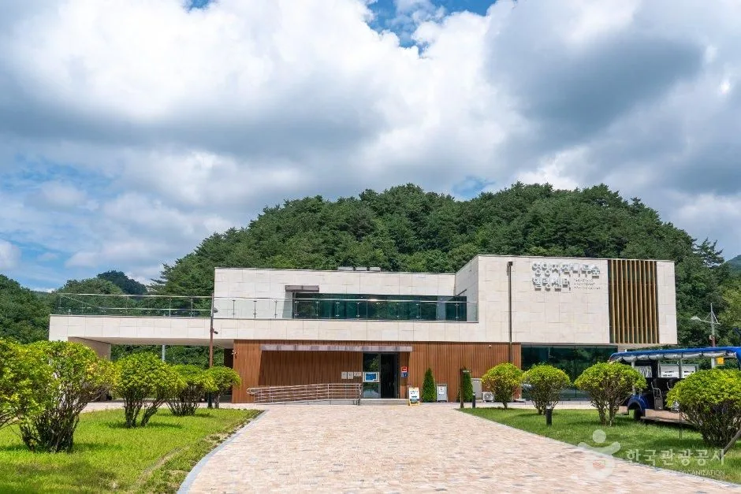
▲ 영양 자작나무숲 힐링센터(안내소) 외관. 전기차 탑승 전 안내를 받는 곳이다. 촬영 시기는 확인하지 못했고 잎이 푸른 모습이어서 가을 사진은 아니다. 사진=한국관광공사
2. 운영시간·휴무·요금 — 월요일을 피하라
TourAPI는 이용시간을 09:30~16:30, 휴무일을 매주 월요일, 입장료를 무료로 표기한다. 영양군 전기차 시간표 역시 "매주 월요일은 휴무"를 붉은 글씨로 적었다. 오늘이 화요일이니 이번 주는 수요일~일요일에도 정상 운영일이다. 다만 시간표 아래에는 "안전 및 기상 여건에 따라 운행일정이 변경 및 중단될 수 있습니다"라는 문구가 있다.
| 요일 | 운영 | 전기차 |
|---|---|---|
| 10/13(화)·10/14(수)·10/15(목)·10/16(금) | 운영 | 평일 시간표(10회) |
| 10/17(토)·10/18(일) | 운영 | 주말·공휴일 시간표(13회) |
| 10/19(월) | 휴무 | 운행 없음 |
이용시간 16:30은 숲에 머무는 마지막 시각이 아니라 안내 시간으로 보는 편이 안전하다. 평일 마지막 하행은 16:00이고, 주말 마지막 하행도 16:00이다. 올해 영양군이 숲 이용 요금이나 별도 예약제를 공지한 것은 확인하지 못했다.
3. 전기차 시간표 — 평일 40분, 주말 30분 간격
일반 차량은 숲 입구까지 들어갈 수 없고, 주차장에서 전기차를 타는 구조다. 영양군 지도에는 주차장·전기차 탑승대기소에서 중간정거장까지 3.1km(전기차 약 15분), 전기차에서 내려 자작나무숲까지 도보 1.6km(약 30분)가 표시돼 있다. 둘을 더하면 편도 4.7km다. 언론이 말하는 '4.7km 구간'이 이 합계로 보인다.
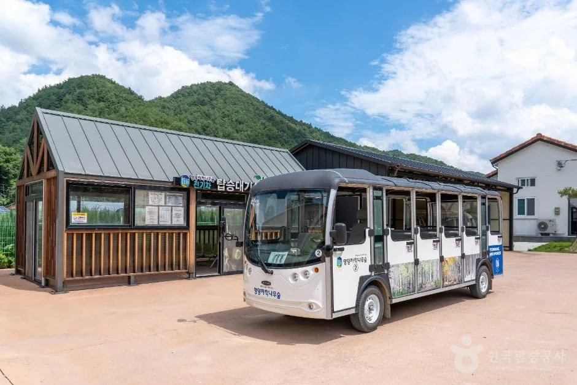
▲ 전기차 정류장과 전기차. 영양군 지도는 주차장·전기차 탑승대기소에서 중간정거장까지 3.1km를 전기차로 이동한다고 적었다. 촬영 시기는 확인하지 못했고 잎이 푸른 모습이어서 가을 사진은 아니다. 사진=한국관광공사
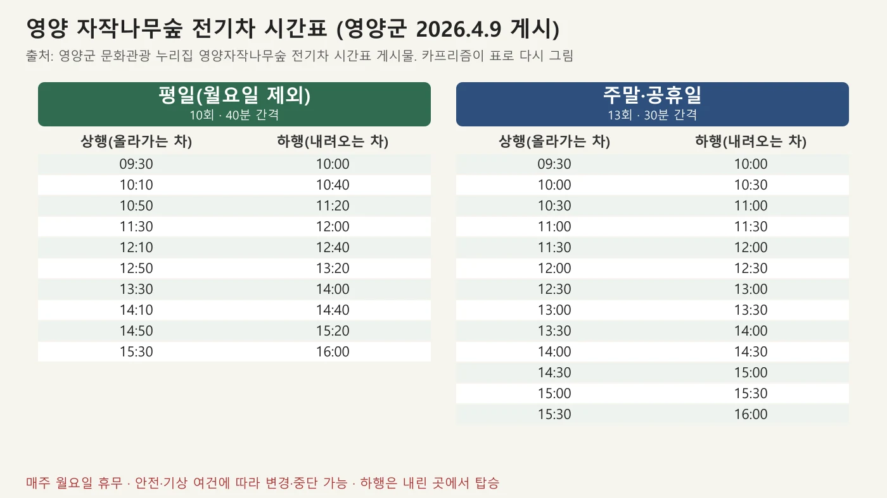
▲ 영양군 누리집에 게시된 전기차 시간표(2026.4.9)를 평일·주말로 다시 정리한 도표. 사진=영양군 자료(카프리즘 재구성)
| 구분 | 평일 | 주말·공휴일 |
|---|---|---|
| 첫 상행 | 09:30 | 09:30 |
| 마지막 상행 | 15:30 | 15:30 |
| 마지막 하행 | 16:00 | 16:00 |
| 운행 횟수 | 10회 | 13회 |
| 배차 간격 | 40분 | 30분 |
| 휴무 | 매주 월요일 | 매주 월요일 |
⚠️ 자료끼리 어긋나는 부분
영양군 시간표(2026.4.9 게시)는 상행 열 위에 "자작나무숲까지 운행"이라고 적었지만, 리플렛 지도(파일명 260707, 7월 자료)는 전기차 3.1km 후 도보 1.6km로 안내한다. 어느 쪽이 실제 노선인지 날짜만으로는 가릴 수 없어 병기한다. 지도에는 "기상 및 현장 여건에 따라 운행 간격, 노선변경 가능(우천 시 미운영)"이라는 문구도 있다. 2024년 10월 경북매일 기사는 당시 "1시간 간격으로 왕복 운행", "예약은 불가하고 선착순", "우천시 전기차는 다니지 않는다"고 적었다. 시간표는 해마다 바뀌므로 당일 힐링센터 확인이 필요하다.
리플렛 지도는 간격도 다르게 적었다. 전기차 운행안내에 "09:30~15:30(30분 간격 운행, 운행시간 변경가능)"이라고 써 있어, 평일 40분 간격인 4월 시간표와 어긋난다. 같은 안내에는 전기차 3.1km 구간을 걸으면 1시간 걸린다는 표기도 있다. 평일 간격은 시간표(40분)와 리플렛(30분) 중 어느 쪽이 맞는지 가릴 수 없으므로 당일 확인이 필요하다.
시간표 아래에는 "하행 탑승은 내린 곳에서 탑승", "출발시간 전 탑승인원 모두 탑승 시 미리 출발 가능"이라는 안내도 있다. 즉 하행도 정해진 정류장이 아니라 내린 곳에서 기다리는 방식이고, 사람이 다 차면 시간 전에 출발할 수 있다.
4. 주차·가는 길 — 힐링센터 주차장이 출발점
내비게이션에는 영양자작나무숲 힐링센터(수비면 죽파리 405) 또는 자작나무길 96을 찍으면 된다. 영양군 리플렛의 찾아오시는 길은 동청송영양IC에서 영양군청 방면으로 올라가 수비면으로 들어가는 길로 그려져 있다. 주차장의 면수와 올해 요금은 영양군 자료에서 확인하지 못했다. 2024년 10월 경북매일 기사는 "주차료와 전기차 이용은 무료"라고 적었지만 2년 전 보도다.
방문객 규모는 두 개의 지역 신문 기록이 단서다. 2024년 10월 30일자 경북매일 기사는 "가을철 평일 하루 300명, 주말 600명 정도가 방문한다"고 적었다. 2025년 11월 9일에 다녀온 방문기(경북매일 11월 20일 등록)는 안내센터 주차장이 대형버스와 승용차로 가득했다고 전했다. 올해 방문객 수는 확인하지 못했다. 전기차 정원이 22명이라는 2024년 기사 기록과 주말 30분 간격을 합치면, 가을 주말 오전에는 대기 줄이 길어질 수 있다. 2025년 방문기 글쓴이는 전기차를 타려면 30분을 기다려야 해 타지 않고 걸었다고 적었다. 이는 방문기 한 건의 경험이다.
| 항목 | 내용 | 상태 |
|---|---|---|
| 주소 | 영양군 수비면 죽파리 405(힐링센터 주차장) / 자작나무길 96 | 영양군 리플렛·TourAPI |
| 주차 | 가능(TourAPI). 면수·요금 공식 수치 없음 | 확인하지 못했다 |
| 약도 기준 고속도로 출구 | 동청송영양IC에서 영양군청 방향 | 영양군 리플렛 약도 |
| 전화 | 054-682-6853(힐링센터) | 영양군 누리집 2026.7.9 안내 |
| 대중교통 | 시내버스 노선·시간은 별도 확인 필요 | 확인하지 못했다 |
5. 코스 — 제1코스 1.49km, 제2코스 1.52km
숲 안 탐방로는 두 갈래다. 영양군 지도 기준으로 제1코스는 1.49km(목교→쉼터→쉼터→제2쉼터→쉼터→전망대, 구간 456·181·145·274·436m), 제2코스는 1.52km(제1쉼터→포토존→쉼터→제2쉼터→쉼터→전망대, 구간 350·314·145·274·442m)다. 구간 길이를 합하면 각각 1,492m와 1,525m이고, 지도에 적힌 총거리와 맞는다. 코스별 소요시간은 영양군 자료에서 찾지 못해 확인하지 못했다. 영양군 지도가 도보 1.6km를 30분으로 잡은 것을 보면 경사가 그리 심하지 않은 길로 짐작되지만, 숲 안 코스의 시간은 추정이다.
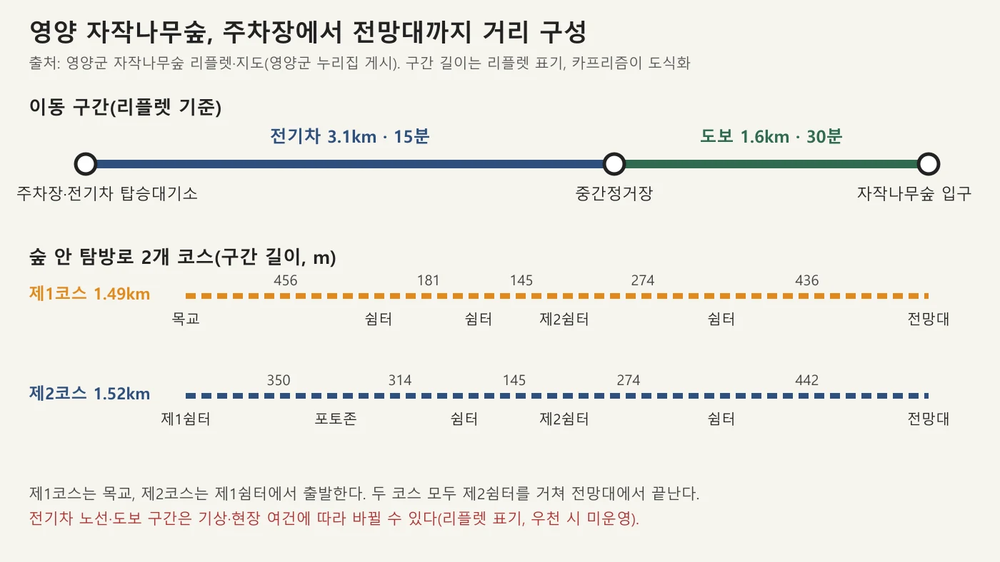
▲ 영양군 리플렛 지도의 이동 구간(전기차 3.1km·도보 1.6km)과 제1·2코스 구간 길이를 도식화했다. 사진=영양군 자료(카프리즘 재구성)
▲ 자작나무 사이로 이어진 목교 산책로. 영양군 지도에서 제1코스는 목교에서 출발한다. 촬영 시기는 확인하지 못했고 잎이 푸른 모습이어서 가을 사진은 아니다. 사진=한국관광공사
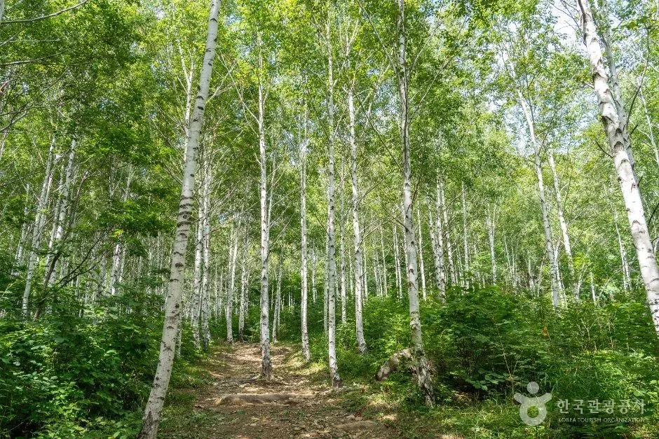
▲ 자작나무 숲길. 촬영 시기는 확인하지 못했고 잎이 푸른 모습이어서 가을 사진은 아니다. 사진=한국관광공사
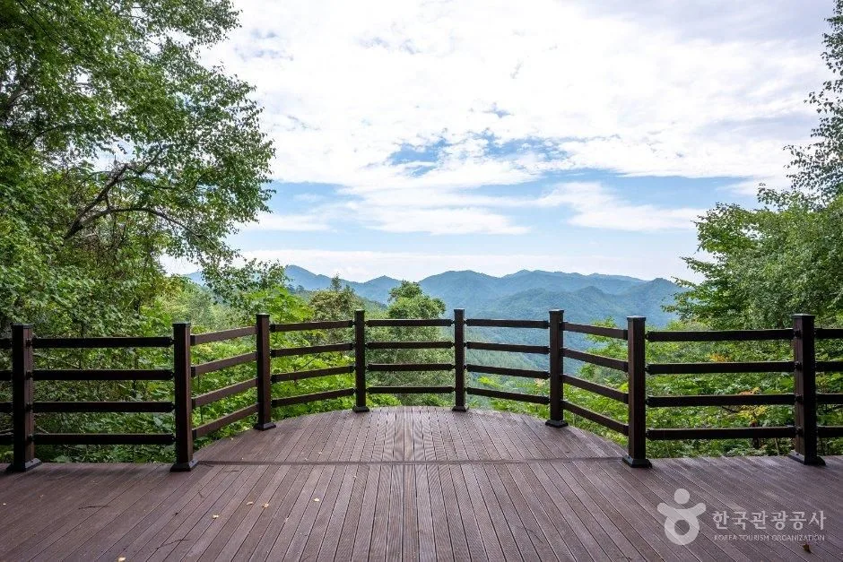
▲ 전망대에서 내다본 산 능선. 제1·2코스는 모두 전망대로 이어진다. 촬영 시기는 확인하지 못했고 잎이 푸른 모습이어서 가을 사진은 아니다. 사진=한국관광공사
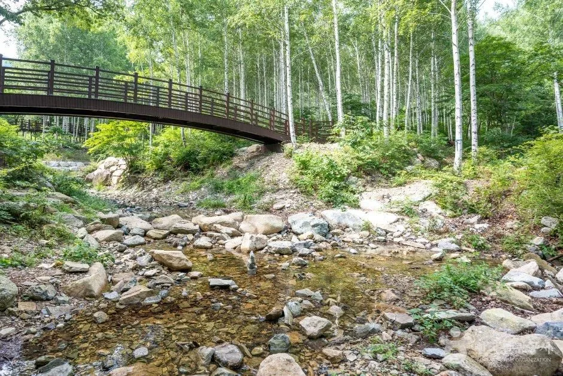
▲ 숲 안 계곡과 나무다리. 촬영 시기는 확인하지 못했고 잎이 푸른 모습이어서 가을 사진은 아니다. 사진=한국관광공사
| 상황 | 추천 | 이유 |
|---|---|---|
| 시간이 부족하다 | 전기차 마지막 상행 15:30 전에 탑승 | 그 뒤에는 걸어 올라가야 해 하행 16:00을 맞추기 어렵다(추정) |
| 걷기 부담이 적은 쪽 | 제1코스(1.49km) | 제2코스보다 약 30m 짧다. 두 코스 차이는 작다 |
| 사진 위주 | 제2코스의 포토존 경유 | 영양군 지도에 포토존이 제2코스 구간에 표시 |
| 비 오는 날 | 전화 확인 후 출발 | 리플렛이 우천 시 전기차 미운영이라고 표기 |
6. 가을 노란 단풍 시기 — 올해 예측은 없다
산림청·국립수목원의 2026년 단풍 절정 예측지도(9월 22일 발표)에는 영양 자작나무숲 단일 지점의 예측이 없다. 같은 지도에서 경북권 산은 소백산 10월 20일, 주왕산 10월 26일, 가야산(경북) 10월 28일로 예측됐다. 자세한 수치는 산림청 공식 단풍 절정 지도 기사와 절정 예측일 기준 주말표를 참고하면 된다. 산림청의 '절정'은 단풍이 50% 든 시점이고, 기상청은 첫 단풍을 약 20%, 절정을 약 80%로 본다.
영양 자작나무숲의 과거 가을 기록은 두 건을 확인했다. 2024년 10월 30일자 경북매일 기사는 "노랗게 물들어 가는 잎들이 물결치며 물비늘처럼 반짝이고 있었다"고 적었다. 2025년 11월 9일 방문기는 수비면으로 들어서는 진입로에 붉고 노란 단풍이 한창이었다고 전했고, 숲은 순백의 자작나무로 묘사했다. 두 기록은 개인 방문기이고 해마다 달라질 수 있으므로, 이 글은 10월 말~11월 초에 노란 잎과 진입로 단풍을 만났다는 과거 기록까지만 확인한다. 올해 절정일은 확인하지 못했다.
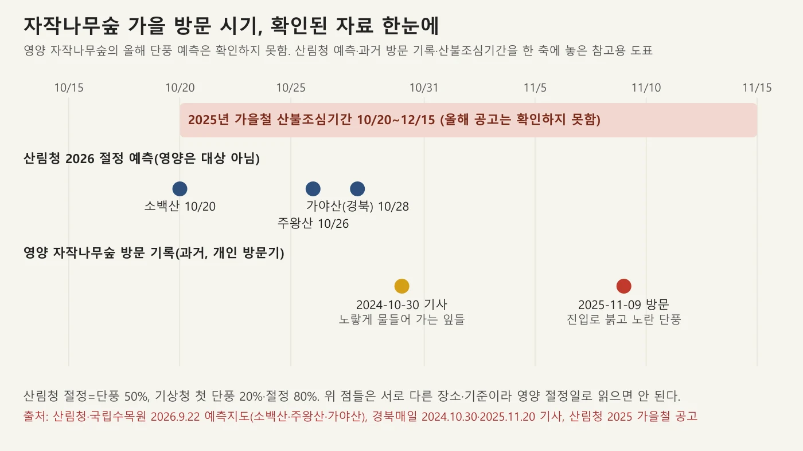
▲ 산림청 경북권 예측(소백산·주왕산·가야산), 영양 자작나무숲 과거 방문 기록, 2025년 가을철 산불조심기간을 한 축에 놓은 참고 도표. 사진=산림청·경북매일 자료(카프리즘 재구성)
영양군 리플렛은 가을 사진으로 하얀 자작나무 사이에 노란 잎과 붉은 단풍이 섞인 장면을 실었다. 자작나무 잎의 변색 시기는 일반적인 자작나무 정보이지만, 영양 숲의 올해 시기를 알려 주는 자료는 아니다.
7. 올해 입산통제·산불조심기간 — 공고를 확인하지 못했다
2025년 가을철 산불조심기간은 산림청 공고로 10월 20일~12월 15일(57일)이었다. 2026년 가을철 공고는 확인하지 못했다. 영양군은 올해 봄에 1월 20일~5월 15일(116일)을 봄철 산불조심기간으로 정했다는 언론 보도가 있었지만, 이 기록이 가을에 그대로 이어진다고 볼 근거는 없다. 산불조심기간과 탐방로 통제는 같은 날 시작하지 않는다는 점은 단풍철에 닫히는 길 기사에 정리했다.
✅ 이 숲의 통제 관련 확인 결과
· 2025년 11월 9일 방문기가 있어 지난해 가을철 산불조심기간 중에도 숲이 운영된 사례는 확인된다
· 올해(2026) 입산통제·휴장 공고는 확인하지 못했다
· 영양군 누리집 안내 페이지에서는 입산통제 문구를 찾지 못했다(2026-10-13 확인)
· 따라서 출발 전 힐링센터 054-682-6853 확인이 필요하다
산불조심기간에는 라이터·버너 같은 화기 소지가 금지되고 입산통제구역 출입이 금지된다는 것이 산림청 안내의 일반 원칙이다. 이 숲이 올해 해당되는지는 확인하지 못했다.
8. 올해 행사 — 능이버섯축제는 10월 9~10일에 끝났다
영양군 보도자료(2026.10.1, 공공누리 제1유형)에 따르면 제5회 수비능이버섯축제가 10월 9일부터 10일까지 죽파리 자작나무숲 일대에서 열렸다. 올해는 장소를 이곳으로 옮겼고, 직거래 판매장·능이버섯 먹거리장터·능이라면 나눔·'자작나무 가을 숲 공연'·퀴즈·무게 맞히기가 예정돼 있었다. 오늘이 10월 13일이니 이미 끝난 행사다. 이번 가을 추가 행사는 확인하지 못했다.
보도자료 원문은 영양군 보도자료 바로가기에서 확인 가능하다.
9. 인근 영양 명소 — 주실마을·수하계곡·밤하늘
| 장소 | 확인한 내용 | 비고 |
|---|---|---|
| 영양 주실마을 | TourAPI: 일월면 주실길 55, 상시 개방·연중무휴, 문의 054-680-6412. 조지훈 시인 생가 호은종택(경상북도 기념물) 등 종택이 남은 전통마을 | 자작나무숲과 직선거리 약 15km(도로 거리는 확인하지 못함) |
| 수하계곡(영양) | 영양 자연8경 '수하계곡과 반딧불이'에 포함. TourAPI: 수비면 수하리, 상시 개방 | 직선거리 약 12km. 반딧불이는 여름 소재라 가을엔 해당 없음 |
| 영양 국제밤하늘보호공원 | 2015년 지정 당시 언론 보도(서울신문 등): 수비면 수하계곡 왕피천 일대 약 390만㎡가 아시아 최초 국제밤하늘보호공원으로 지정 | 밤에 차 세우고 별 보는 곳 기사 참고 |
| 인제 자작나무숲(비교) | 같은 자작나무숲이지만 임도 3.2km를 걷는 구조 | 인제 자작나무숲 기사 |
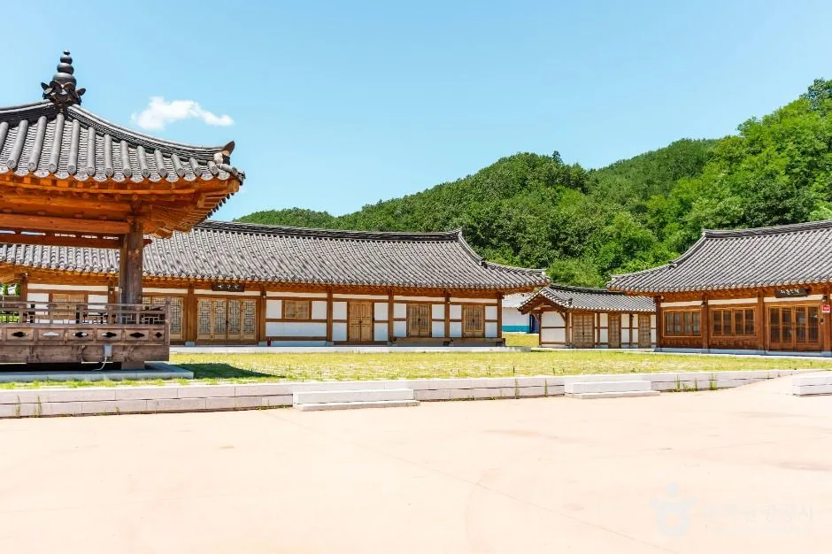
▲ 영양 주실마을의 한옥. 조지훈 시인이 태어난 전통마을로, 호은종택 등 종택이 남아 있다. 촬영 시기는 확인하지 못했고 푸른 산이 보이는 여름 사진이다. 사진=한국관광공사
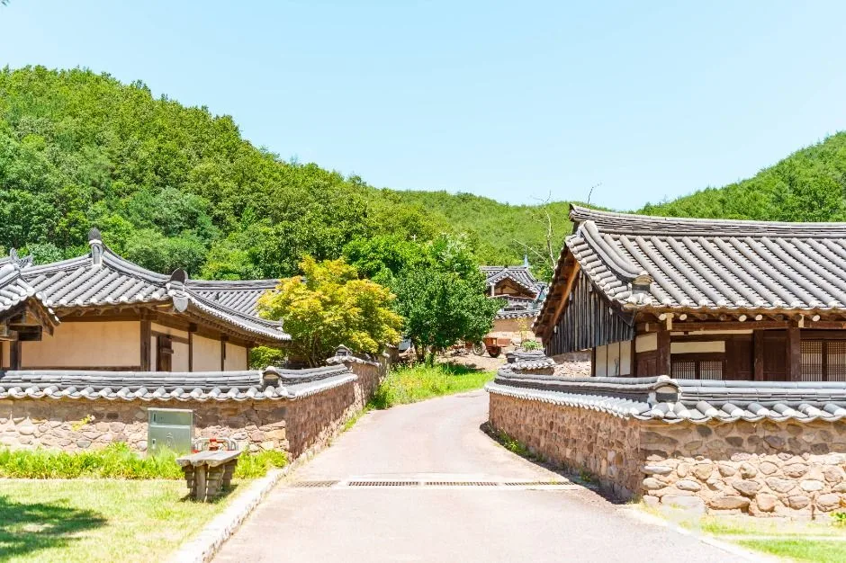
▲ 주실마을 돌담 길과 한옥 지붕. 촬영 시기는 확인하지 못했고 가을 사진은 아니다. 사진=한국관광공사
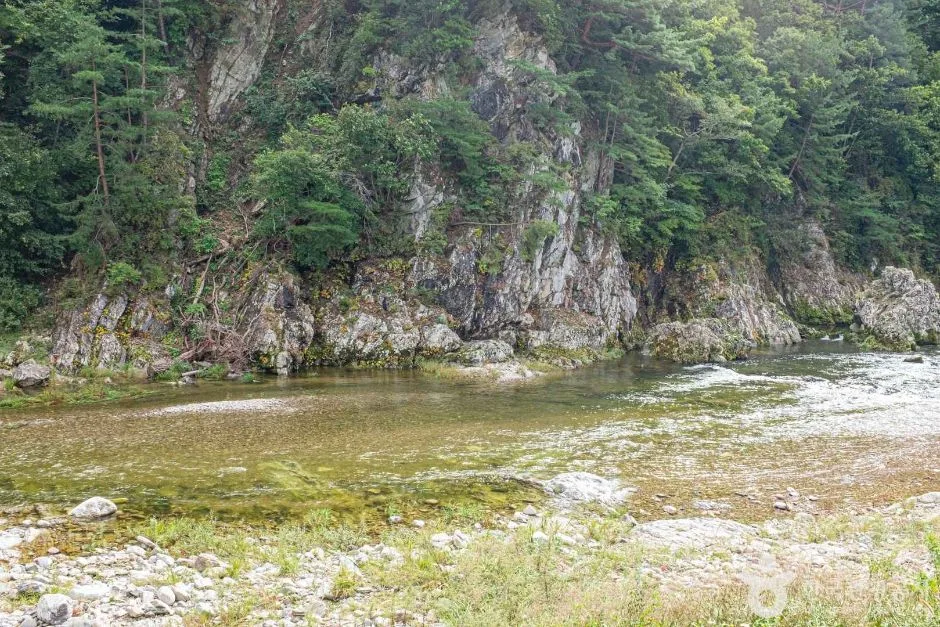
▲ 수하계곡 일대. 한국관광공사 원본을 편집 없이 형식만 변환했다. 촬영 시기는 확인하지 못했고 푸른 숲이 보이는 여름 사진이다. 사진=한국관광공사
직선거리는 지도 좌표 간 거리일 뿐 실제 운전 시간이 아니다. 산길이 많은 영양은 도로 거리가 길어질 수 있어 이동 시간은 내비게이션으로 따로 확인해야 한다. 같은 날 여러 곳을 묶는다면 전기차 마지막 상행 15:30을 기준으로 자작나무숲을 오전에 넣는 편이 안전하다.
10. 출발 전 체크리스트와 문의처
- 월요일 휴무인지 확인하고, 화~일 중 날짜를 고른다.
- 평일 마지막 상행 15:30, 하행 16:00을 기준으로 도착 시각을 정한다.
- 전화: 힐링센터 054-682-6853, 산림녹지과 054-680-6851, 영양군 문화관광과 054-680-6412(관광 일반).
- 올해 입산통제·휴장 여부를 전화로 확인한다(공고 확인하지 못함).
- 비 예보가 있으면 전기차 운행 여부부터 묻는다.
- 산불조심기간에는 라이터·버너를 가져가지 않는다.
✅ 핵심 체크
· 무료 입장, 휴무 매주 월요일, 이용시간 09:30~16:30
· 전기차 평일 10회(40분)·주말 13회(30분), 마지막 상행 15:30
· 전기차 3.1km 후 도보 1.6km(리플렛), 제1코스 1.49km·제2코스 1.52km
· 올해 가을 통제 공고·단풍 절정 예측·주차 면수·요금은 확인하지 못함
11. 정리
영양 자작나무숲은 입장이 무료이고 월요일이 휴무이며, 전기차는 평일 10회·주말 13회, 마지막 상행은 15:30이다. 영양군 리플렛은 전기차 3.1km 뒤 도보 1.6km를 안내하고, 숲 안 코스는 제1코스 1.49km, 제2코스 1.52km다.
올해 가을 입산통제·산불조심기간 공고와 영양 자작나무숲의 단풍 절정 예측은 확인하지 못했다. 과거 방문기는 10월 말 노란 잎, 11월 초 진입로 단풍을 전하지만 올해를 보장하지 않으므로 출발 전 힐링센터에 전화하는 것이 가장 정확하다. 10월 9~10일 수비능이버섯축제는 이미 끝났다.